Cara login dengan No. Peserta, mengerjakan ujian Pilihan Ganda, Esai, dan Ujian Praktik/Keterampilan,
menyimpan jawaban, mengunggah hasil, serta apa yang terjadi bila waktu habis atau koneksi terputus.
Login ujian: halaman depan aplikasi (No. Peserta)Versi: November 2026Sebelumnya: Panduan Peserta — Pendaftaran Sertifikasi
Tiga hal terpenting
Esai: klik Simpan Jawaban di setiap soal sebelum pindah soal atau mengakhiri ujian.
Jawaban yang belum disimpan hilang.
Hanya satu ujian yang bisa berjalan. Akhiri ujian yang sedang dikerjakan (atau unggah hasil praktik) sebelum memulai ujian lain.
Waktu tidak bisa diulang. Waktu berjalan sejak Anda menekan Mulai dan tetap berjalan walau halaman ditutup.
Isi panduan
Persiapan sebelum ujian
Login dengan No. Peserta
Dashboard & aturan satu ujian berjalan
Halaman konfirmasi & waktu ujian
Ujian Pilihan Ganda
Ujian Esai
Ujian Praktik/Keterampilan
Upload Tugas & Esai dengan unggah berkas
Waktu habis & koneksi terputus
Pertanyaan umum
1Persiapan sebelum ujian
Siapkan
Keterangan
No. Peserta
Dikirim lewat email setelah permohonan disetujui, juga tampil di Dashboard Portal Peserta. Contoh: PSP.004.2026.00001.
Perangkat
Laptop/komputer dengan browser terbaru (Chrome/Edge/Firefox). Hindari HP untuk Esai dan Ujian Praktik.
Koneksi
Internet stabil; siapkan cadangan (hotspot) bila memungkinkan.
Aplikasi kerja
Untuk Ujian Praktik/Keterampilan: aplikasi pembuka template (Word/Excel/PDF reader/ZIP, atau aplikasi khusus skema).
Jadwal
Ujian hanya bisa dimulai di antara jam Mulai dan Selesai sesi yang tertera di kartu ujian.
2Login dengan No. Peserta
Buka halaman depan aplikasi, ketik No. Peserta persis seperti di email (termasuk titik), lalu klik
Masuk ke Ujian. Tidak ada password.
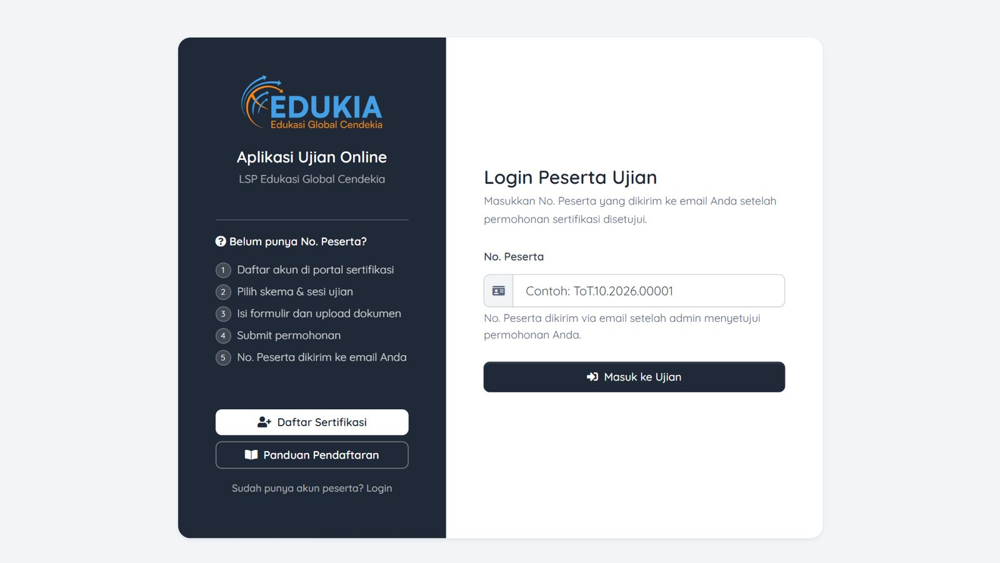
Halaman Login Peserta Ujian
Komputer dipakai bergantian?Klik LOGOUT (kanan atas) setelah selesai.
3Dashboard & aturan satu ujian berjalan
Dashboard menampilkan satu kartu untuk setiap ujian di sesi Anda — mis. Pilihan Ganda, Esai, dan
Ujian Praktik/Keterampilan (skema dua bagian seperti Lifting punya satu kartu per bagian). Kartu menampilkan durasi
serta jam mulai/selesai sesi. Urutan mengerjakan bebas.
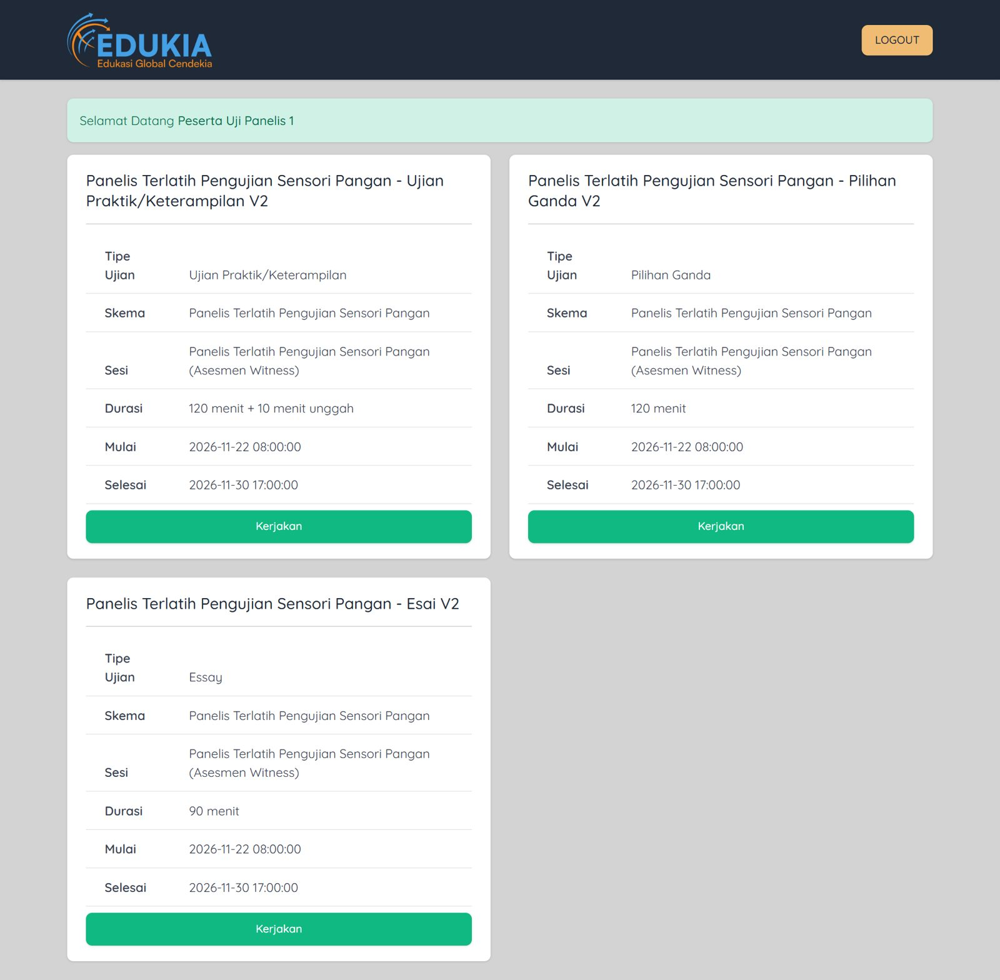
Dashboard peserta — contoh sesi dengan PG, Esai, dan Ujian Praktik/Keterampilan
Tombol di kartu
Arti
Kerjakan
Ujian belum dimulai — buka halaman konfirmasi.
Lanjut Kerjakan
Ujian sudah dimulai dan masih ada waktu — lanjutkan.
… sedang berjalan — selesaikan dulu
Ujian lain sedang berjalan. Akhiri ujian itu dulu (atau unggah hasil praktiknya).
Sudah Dikerjakan
Ujian sudah diakhiri.
Sudah Diunggah — Lihat / Ganti Hasil
Hasil praktik sudah diunggah; masih bisa diganti selama waktunya ada.
Waktu Habis
Waktu Ujian Praktik/Keterampilan sudah habis.
Belum Mulai / Waktu Terlewat
Di luar jadwal sesi. Hubungi panitia bila jadwal Anda seharusnya sudah dibuka.
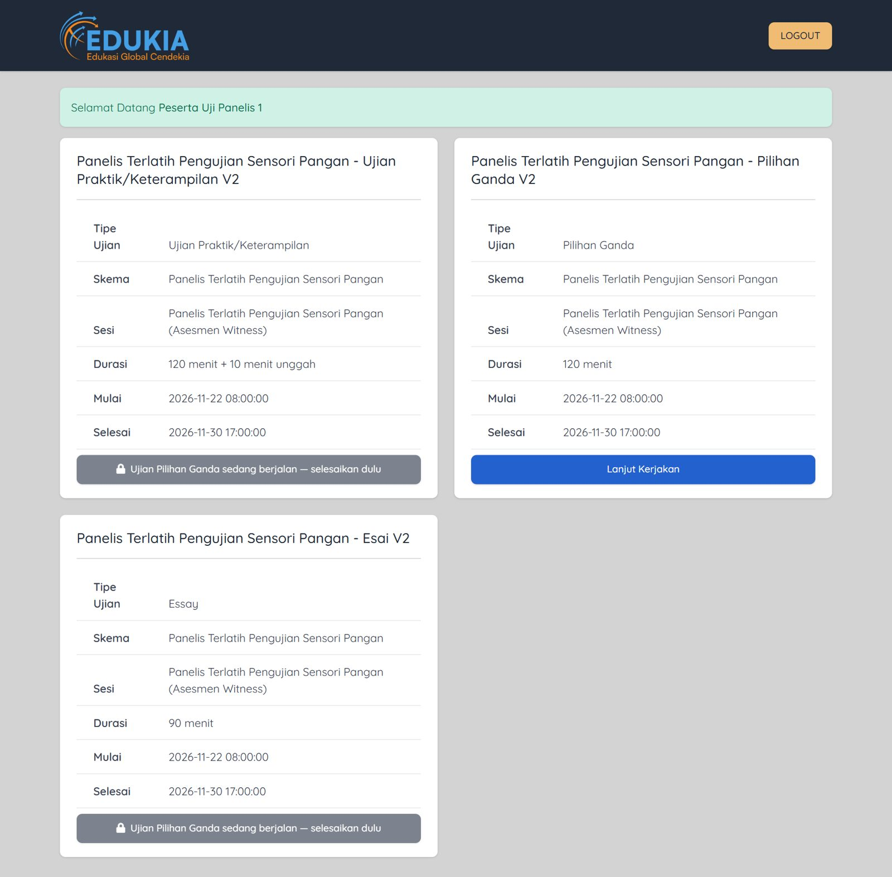
Saat Pilihan Ganda berjalan, kartu Esai dan Ujian Praktik terkunci sampai PG diakhiri
4Halaman konfirmasi & waktu ujian
Setelah klik Kerjakan, halaman konfirmasi menampilkan nama, No. Peserta, skema, sesi, jenis ujian, durasi, dan deskripsi
ujian. Periksa datanya, lalu klik Mulai Ujian.
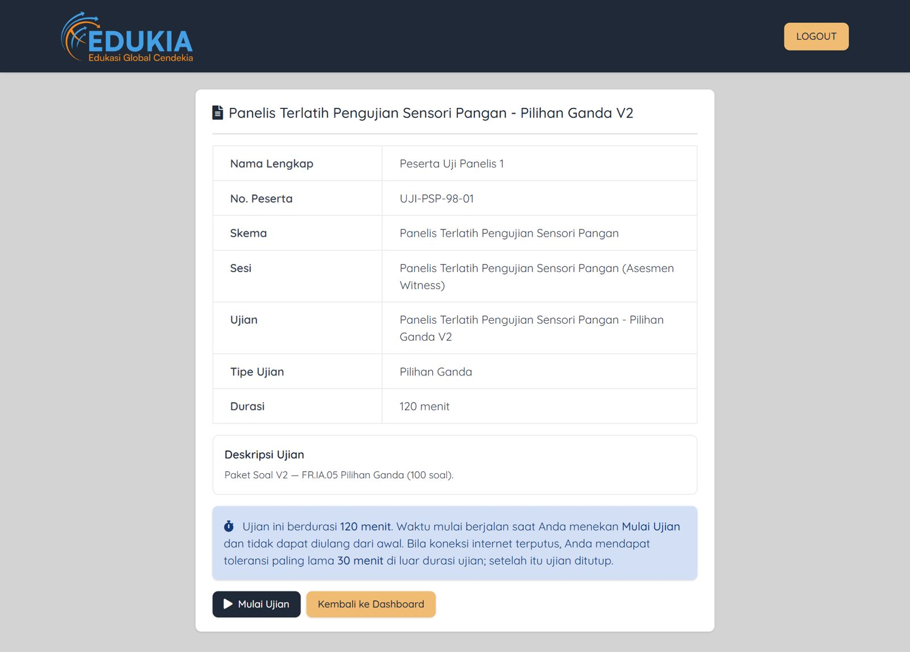
Halaman konfirmasi ujian Pilihan Ganda
Waktu mulai berjalan saat Anda menekan Mulai Ujian dan tidak dapat diulang dari awal.
Bila koneksi terputus, Anda mendapat toleransi paling lama 30 menit di luar durasi ujian (khusus Pilihan Ganda dan Esai).
Setelah itu ujian ditutup. Lihat bagian 9.
Bila ada ujian lain yang sedang berjalan, halaman ini menampilkan peringatan dan tombol Mulai tidak tersedia.
5Ujian Pilihan Ganda
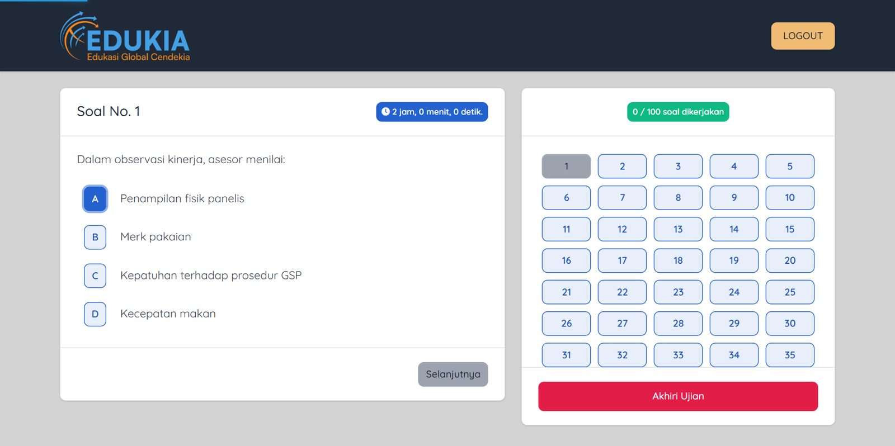
Tampilan soal PG: soal & pilihan di kiri, navigasi nomor soal di kanan
Klik huruf pilihan jawaban (A/B/C/D…). Jawaban langsung tersimpan dan tombolnya berwarna.
Ganti jawaban dengan mengklik pilihan lain kapan saja sebelum ujian diakhiri.
Pindah soal dengan Selanjutnya / Sebelumnya atau klik nomor di
panel kanan. Nomor berwarna = sudah dijawab; penghitung di atas panel menunjukkan jumlah soal yang dikerjakan.
Sisa waktu tampil di kanan atas kartu soal.
Setelah selesai, klik Akhiri Ujian. Jendela konfirmasi memberi tahu bila masih ada soal yang belum
dijawab. Klik Ya, Akhiri untuk menyelesaikan.
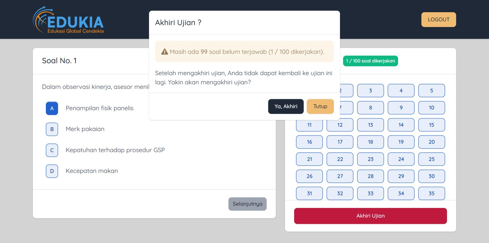
Konfirmasi Akhiri Ujian
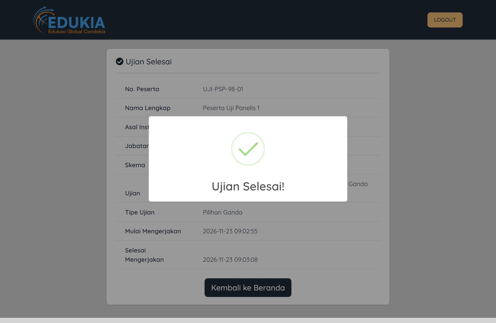
Ujian selesai — kembali ke beranda untuk ujian berikutnya
Setelah diakhiri, ujian tidak bisa dibuka lagi.Periksa kembali semua jawaban sebelum menekan Ya, Akhiri.
6Ujian Esai
Satu halaman per soal. Ketik jawaban di kotak editor (tersedia tebal, miring, garis bawah, perataan, judul, dan daftar).
Wajib: klik Simpan Jawaban di setiap soal
Jawaban tidak tersimpan otomatis. Setelah selesai mengetik satu soal, klik Simpan Jawaban.
Perhatikan label di samping nomor soal: Belum tersimpan berarti ketikan belum dikirim ke server;
Tersimpan berarti aman.
Pindah soal, menutup halaman, atau mengakhiri ujian sebelum menyimpan membuat ketikan soal itu hilang.
Menjawab panjang? Simpan sesekali sambil mengetik — boleh menekan Simpan Jawaban berkali-kali, jawaban terakhir yang dipakai.
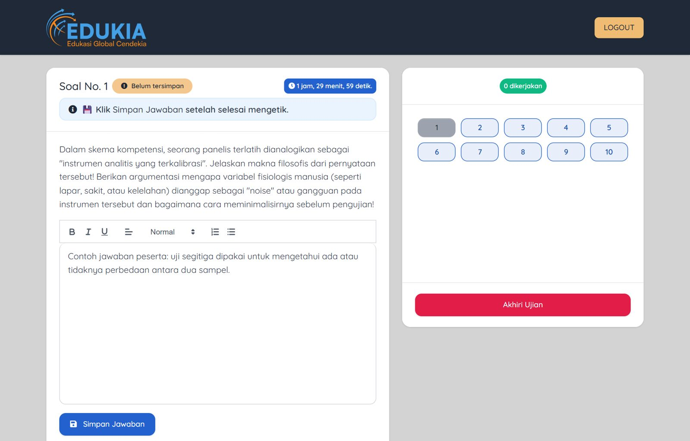
Jawaban sudah diketik tetapi masih "Belum tersimpan"
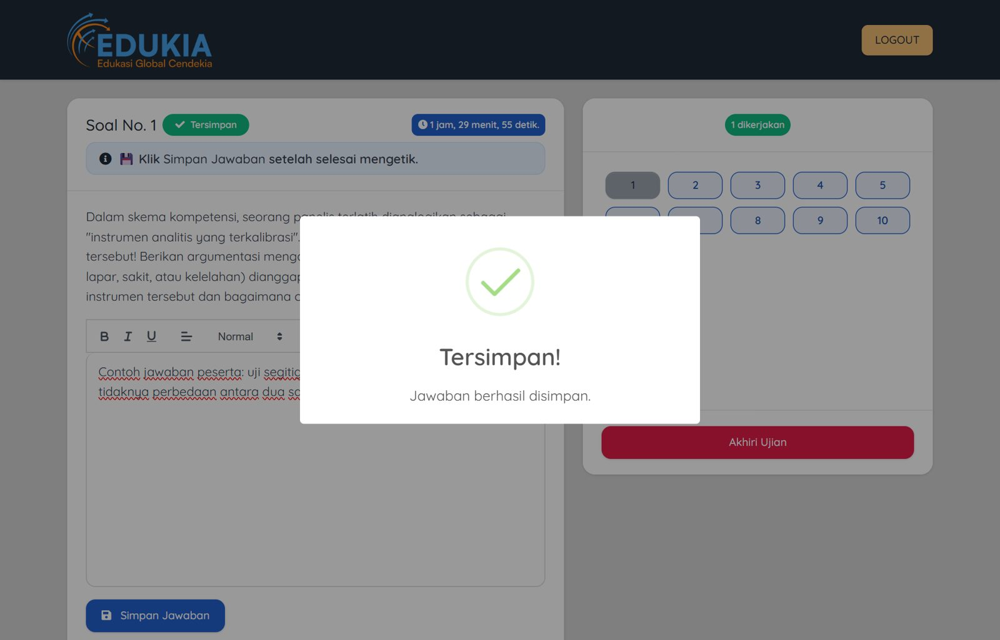
Setelah klik Simpan Jawaban: muncul "Tersimpan!" dan nomor soal di panel kanan berwarna
Nomor soal yang berwarna di panel kanan = sudah ada jawaban tersimpan. Sebelum Akhiri Ujian, pastikan
semua nomor yang Anda kerjakan sudah berwarna.
7Ujian Praktik/Keterampilan
Ujian praktik dikerjakan di luar aplikasi (mis. di Word/Excel atau aplikasi khusus skema) berdasarkan panduan dan
template, lalu hasilnya diunggah. Ujian ini punya dua waktu:
① Waktu pengerjaan
Mis. 120 menit, berjalan sejak Anda menekan Mulai dan tidak dapat dijeda (tetap berjalan walau halaman ditutup).
Panduan & template hanya bisa dibuka selama waktu ini.
② Waktu unggah
10 menit setelah waktu pengerjaan habis, khusus untuk mengunggah atau mengganti hasil. Setelah itu unggahan ditolak.
1
Buka kartu Ujian Praktik/Keterampilan
Klik Kerjakan. Halaman konfirmasi menampilkan data ujian, Waktu Pengerjaan, dan Waktu Unggah.
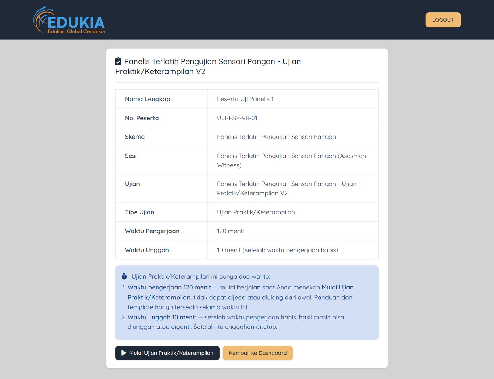
Halaman Ujian Praktik/Keterampilan sebelum dimulai
2
Mulai
Klik Mulai Ujian Praktik/Keterampilan (untuk skema dua bagian: Mulai Bagian N) dan setujui
konfirmasinya. Dua kotak waktu tampil: sisa waktu pengerjaan dan waktu unggah.
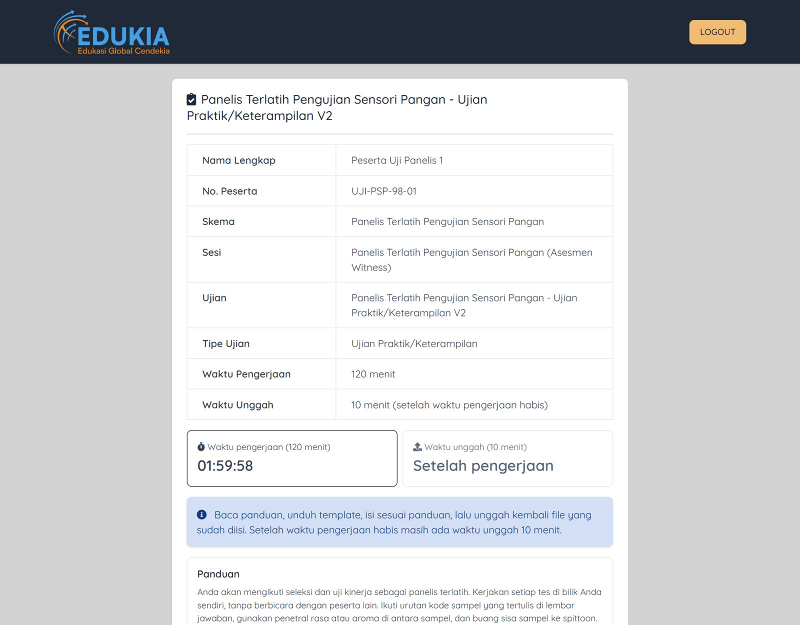
Waktu pengerjaan berjalan; panduan tampil di bawahnya
3
Baca panduan & unduh template
Baca Panduan sampai selesai, klik Unduh Template, lalu kerjakan di perangkat Anda.
Simpan pekerjaan Anda secara berkala di komputer.
4
Unggah hasil
Pilih file hasil (PDF, Office, gambar, ZIP/RAR; maks. 20 MB — banyak file? gabungkan dalam satu ZIP), lalu klik
Unggah Tugas. Tunggu sampai muncul "Tugas sudah diunggah" beserta nama file dan waktunya.
Selama waktunya masih ada, file bisa diganti dengan Ganti Tugas.
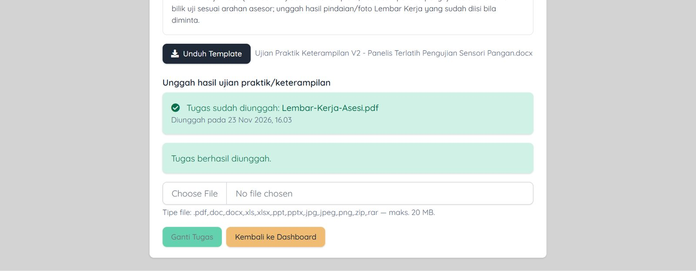
Hasil berhasil diunggah
Perhatikan
Unggah sebelum waktu pengerjaan habis bila memungkinkan. Waktu unggah 10 menit adalah cadangan, bukan waktu kerja tambahan.
Skema dua bagian (mis. Lifting: Calculation dan Gambar): setiap bagian punya kartu, tombol Mulai, waktu, dan unggahan sendiri.
Urutannya bebas, tetapi hanya satu bagian yang bisa berjalan.
Selama satu bagian/ujian praktik berjalan dan hasilnya belum diunggah, ujian lain tidak bisa dimulai.
Memulai ujian lain (PG, Esai, atau bagian praktik berikutnya) menutup ujian praktik yang hasilnya sudah diunggah:
hasilnya tidak bisa diganti lagi. Aplikasi menampilkan peringatan sebelum Anda menekan Mulai.
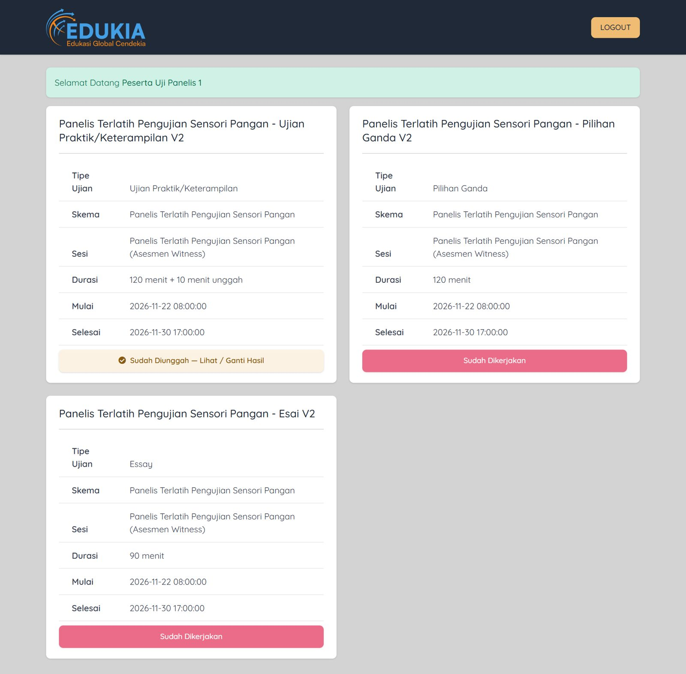
Dashboard setelah PG & Esai diakhiri dan hasil praktik diunggah
8Upload Tugas & Esai dengan unggah berkas
Upload Tugas (sesi tanpa Ujian Praktik/Keterampilan)
Pada beberapa skema, kartu PG/Esai menampilkan "Anda wajib mengunggah tugas sebelum dapat mengerjakan ujian ini."
Klik Upload Tugas, baca panduannya, unduh template, isi, lalu unggah (maks. 20 MB). Tugas ini tidak berbatas
waktu dan diperiksa asesor saat wawancara. Setelah terunggah, kartu PG/Esai terbuka.
Esai dengan unggah berkas (Essay Migas)
Semua soal tampil dalam satu halaman. Ketik jawaban uraian dan klik Simpan Jawaban pada setiap soal;
jawaban berupa berkas dikumpulkan dalam satu file lewat kartu Upload Jawaban Ujian (maks. 20 MB). Tunggu sampai
tertulis File berhasil diupload, lalu Akhiri Ujian.
9Waktu habis & koneksi terputus
Kejadian
Yang terjadi & yang harus dilakukan
Waktu PG/Esai habis
Muncul jendela Waktu Habis! — klik Ya. Jawaban yang sudah tersimpan tetap dinilai.
Koneksi putus saat PG/Esai
Sambungkan lagi, login dengan No. Peserta, klik Lanjut Kerjakan. Jawaban tersimpan tetap ada dan sisa waktu dilanjutkan.
Ujian paling lambat ditutup durasi + 30 menit sejak Anda menekan Mulai Ujian. Ketikan esai yang belum disimpan saat koneksi putus tidak ikut tersimpan.
Koneksi putus saat praktik
Waktu pengerjaan tetap berjalan. Teruskan pekerjaan di perangkat Anda, lalu login kembali dan unggah sebelum waktu unggah habis.
Unggahan gagal
Periksa ukuran file (maks. 20 MB) dan koneksi, lalu ulangi. Bila tetap gagal, segera hubungi pengawas/panitia sebelum waktu habis.
Kendala teknis lain
Segera lapor ke pengawas ujian dengan menyebutkan No. Peserta, nama ujian, dan tangkapan layar pesan yang muncul.
10Pertanyaan umum
Apakah urutan ujian harus PG dulu?
Tidak. Urutannya bebas, tetapi hanya satu ujian yang bisa berjalan pada satu waktu.
Saya tidak sengaja menekan Akhiri Ujian.
Ujian yang sudah diakhiri tidak bisa dibuka sendiri. Segera hubungi panitia.
Saya lupa menyimpan jawaban esai.
Jawaban yang tidak disimpan tidak tercatat di server. Laporkan ke panitia secepatnya; panitia yang memutuskan tindak lanjutnya.
Bisakah login di dua perangkat?
Hindari. Kerjakan dari satu perangkat agar jawaban dan waktu tidak saling menimpa.
Kapan hasil keluar?
Setelah asesor menilai dan hasil difinalisasi. Hasil, SK, dan sertifikat dilihat di Portal Peserta (lihat Panduan Pendaftaran, bagian 10).
Selamat mengerjakan! Bekerjalah secara jujur sesuai Pakta Integritas (FR.AK.01) yang telah Anda tandatangani.
Kendala selama ujian: hubungi pengawas ujian atau panitia LSP Edukasi Global Cendekia.